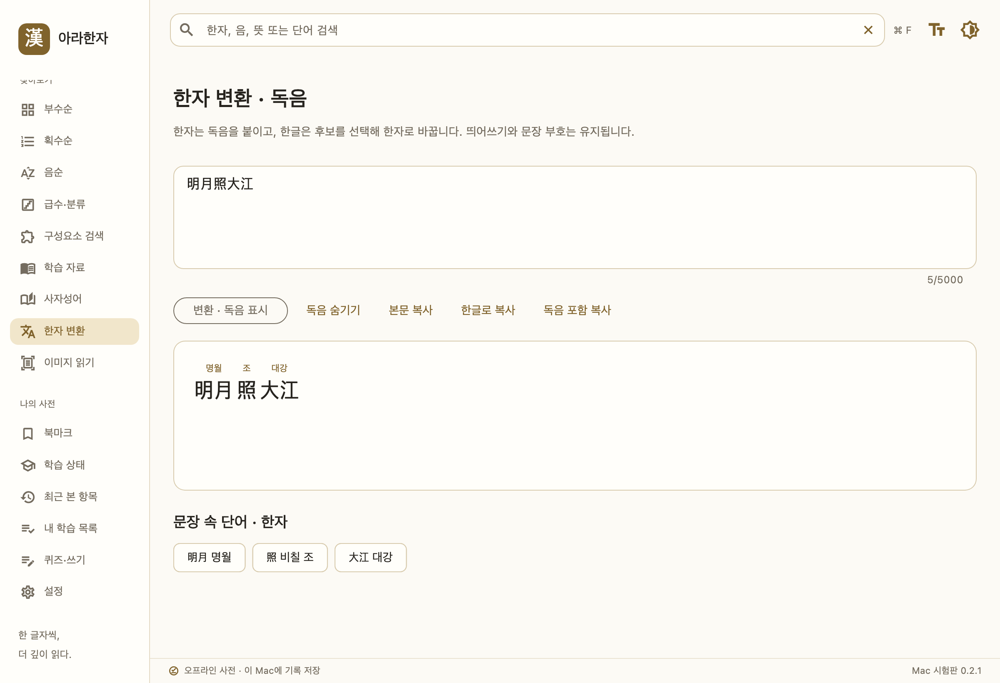
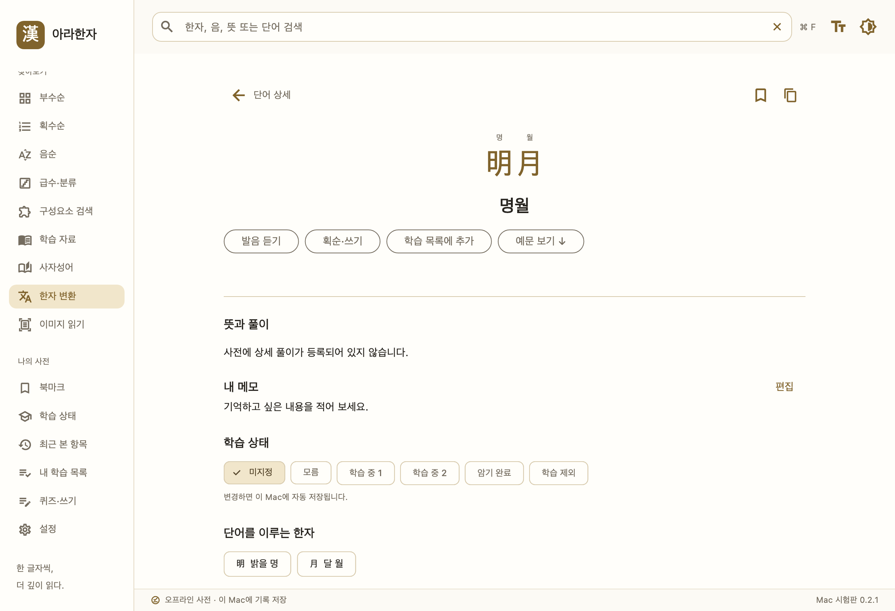
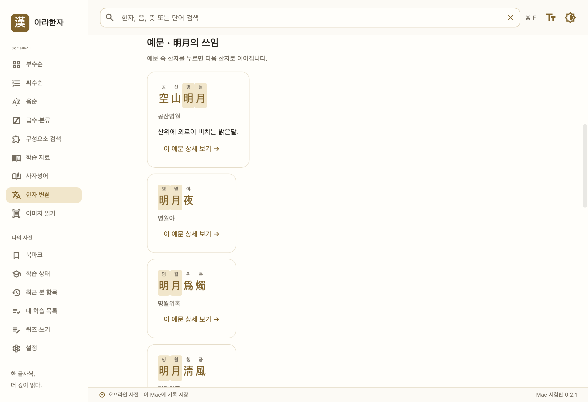
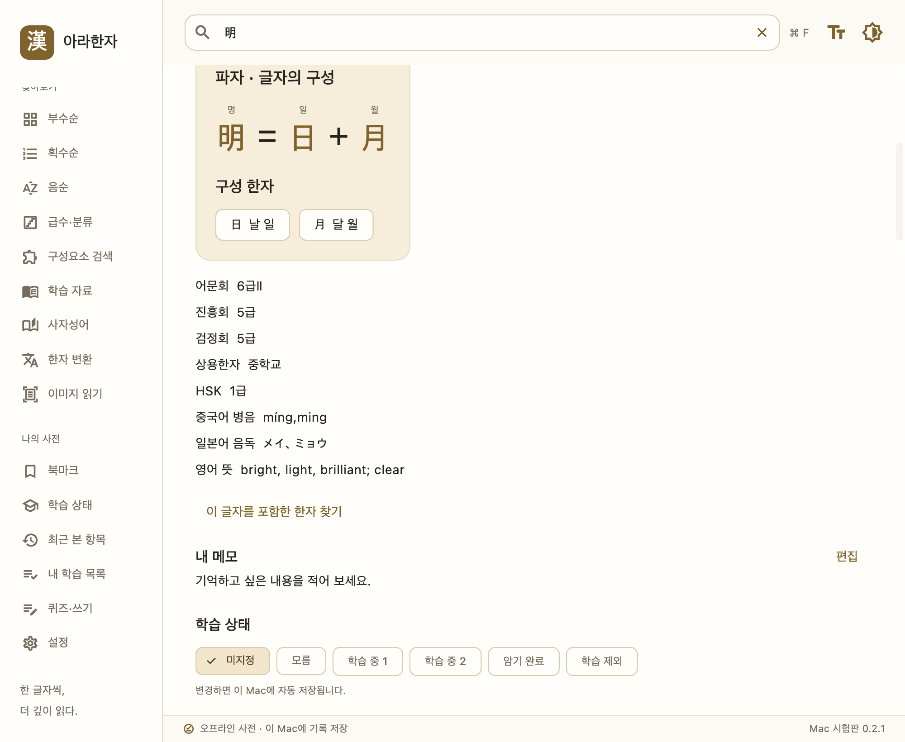

꼬리에 꼬리를 무는 한자 검색
문장의 단어를 누르고, 상세 하단의 예문을 읽어 보세요. 예문 속 다른 한자를 누르면 또 한 번의 발견으로 이어집니다.
문장에서 단어로, 예문에서 또 다른 한자로. 파자로 글자 속 구성까지 살펴보세요.
실제 아라한자 Flutter 앱 화면 · 필요한 부분을 확대해 표시했습니다.
Mac 0.2.1 시험 버전 점검 중 · Windows 개발 중. 정식 다운로드는 준비가 끝나면 제공됩니다.
문장의 단어를 누르고, 상세 하단의 예문을 읽어 보세요. 예문 속 다른 한자를 누르면 또 한 번의 발견으로 이어집니다.
한자를 구성 요소로 나누어 모양과 뜻을 살펴보세요. 明을 日과 月로 이해하고, 각 구성 한자까지 이어서 탐색할 수 있습니다.
북마크와 내 목록으로 만드는 나만의 학습. 뜻·독음 퀴즈와 오답 복습으로 배운 한자를 오래 기억하세요.
실제 Flutter 앱과 원본 사전 데이터를 실행해 캡처했습니다. 화면을 누르면 원본을 크게 볼 수 있습니다.




Windows · macOS
100% 무료 · 광고 없음Mac 버전은 macOS 13.0 이상, Apple Silicon과 Intel을 지원하는 시험 버전을 점검 중입니다. Windows 버전은 개발 중이며, 정식 배포 파일이 준비되면 이 페이지에서 제공됩니다.
현재 Mac 앱의 사전과 포함된 획순 자료는 오프라인으로 사용할 수 있습니다. 모바일 기록과는 동기화되지 않으며, 설정에서 개인 기록을 백업·복원할 수 있습니다.
네. Windows·Mac용 아라한자는 무료로 배포할 예정입니다. 현재 Mac 앱에는 광고나 로그인 절차가 없습니다.
현재 9,574자의 획순 자료가 포함되어 있습니다. 중국 자형 기반으로, 한국 자형이나 획순과 차이가 있을 수 있습니다.
이 페이지의 기능 소개는 현재 Mac 버전 기준입니다. Windows의 쓰기·이미지 문자 인식 지원은 출시 시 안내합니다.
북마크, 메모, 내 목록과 학습 결과는 내 컴퓨터에 저장됩니다. 설정에서 파일로 백업하고 복원할 수 있습니다.